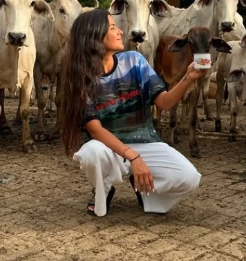
Ordeño y queso llanero
Ordeña junto a los vaqueros y aprende a hacer el queso blanco llanero y el casabe tipo galleta.
Mención Tenedor de Oro 2025 · Miembro del Circuito de la Excelencia · Distintivo Verde
Camaguán · Estado Guárico · Venezuela
Ordeña al amanecer, navega el estero en curiara, cabalga la sabana y termina el día con arpa, cuatro y maracas. Seis generaciones de la familia Freites te abren las talanqueras.
El Hato
Las Caretas sigue siendo un hato ganadero en plena faena. Desde hace seis generaciones pertenece a la familia Freites, que decidió compartir su día a día con quienes quieren conocer el llano desde adentro: el ordeño, el queso blanco, el casabe, el arreo del ganado y las noches de joropo.
Desde aquí se contemplan paisajes de tres estados llaneros —Guárico, Apure y Barinas— y se llega en cualquier vehículo por la carretera principal.
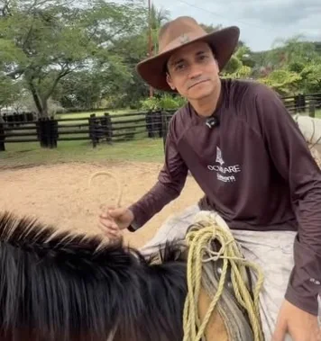
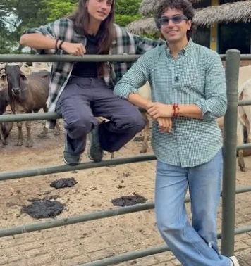
Experiencias
Cada día en el hato tiene su ritmo. Elige qué quieres vivir y nosotros armamos la jornada.

Ordeña junto a los vaqueros y aprende a hacer el queso blanco llanero y el casabe tipo galleta.
Recorre la sabana a caballo y acompaña el trabajo con el ganado, como se ha hecho siempre.
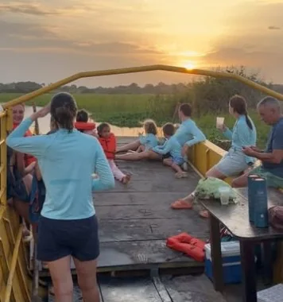
Navega caños y sabanas inundadas observando aves mientras cae el sol sobre el agua.
Navega el río Portuguesa, límite entre Guárico y Barinas, entre esteros y sabanas inundadas hasta el Hato Los Galápagos.
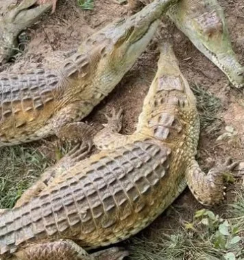
Conoce el trabajo de preservación y cría de babas, y la historia de uno de los cocodrilos más grandes de América.
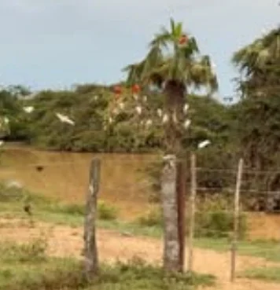
Garzas y aves de sabana en su hábitat, entre palmas llaneras y lagunas. El llano es un paraíso para los observadores.
La música llanera acompaña el atardecer en el bongo o la sobremesa en la casa.
Fotografías, objetos y relatos de la familia que cuentan cómo se ha vivido el llano por generaciones.
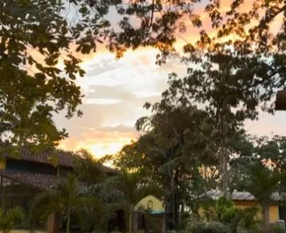
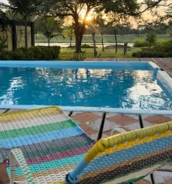
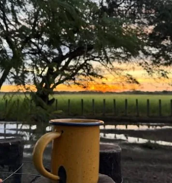
Alojamiento
Una casa colonial restaurada con cariño, donde la memoria de la familia convive con el confort que necesitas después de un día de sabana.
Cocina llanera · Tenedor de Oro 2025
Se come al aire libre, en vajilla de peltre, con lo que da el hato y la sabana. Una cocina de casa que ya tiene reconocimiento nacional.
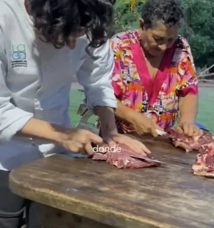
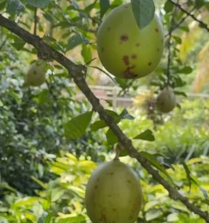
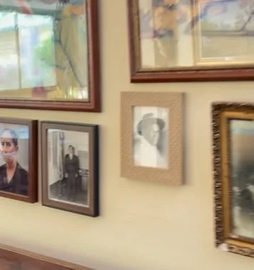
Museo Casa de la Memoria del Llano
Retratos, documentos y objetos de la familia Freites cuentan cómo se trabajaba, se celebraba y se vivía en el llano guariqueño. Es parte de la estadía y de la conversación de sobremesa.
Testimonios
«Un fin de semana inolvidable […] Excelente anfitrión, comida exquisita, en un hermoso escenario. Recordaremos siempre los paseos a caballo y la tanquilla, una combinación perfecta.»
«Un pedazo de paraíso en los llanos venezolanos. Habitaciones limpias y cómodas, con aire y baño. Ricardo Freites es un anfitrión cálido, amable y conocedor.»
Tenedor de Oro
Mención 2025
Un reconocimiento a la cocina del hato. Además, somos parte del Circuito de la Excelencia y llevamos el Distintivo Verde.
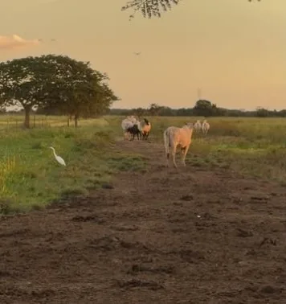
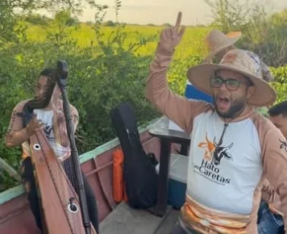
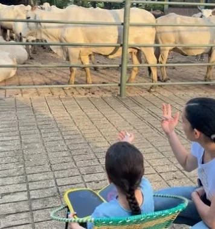
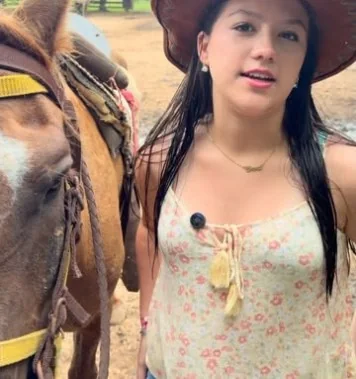
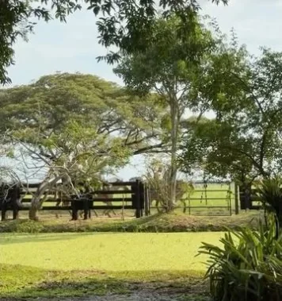
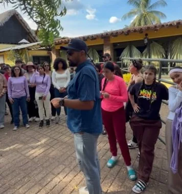
Cuéntanos fechas y número de personas, y te respondemos por WhatsApp con la disponibilidad y el plan.
Escribir por WhatsAppCómo llegar
Carretera Nacional Calabozo–Camaguán, estado Guárico. A 13 km de la Alcabala de Corozopando, busca la entrada identificada como «Las Caretas». Se llega en cualquier tipo de vehículo.
Aeropuerto más cercano: Las Flecheras (San Fernando de Apure), a unos 30 km.
Abrir en Google Maps